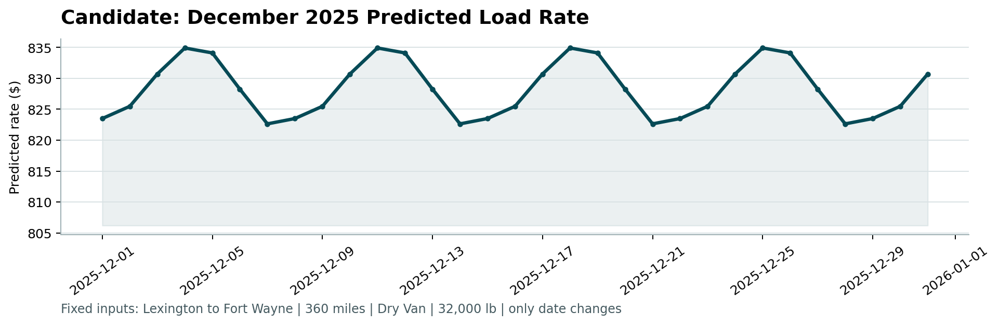

The selected model has an average mean absolute error (MAE) of $125.83 across three later test periods, 19.0% lower than ridge regression. Its errors across the periods range from $119.07 to $136.31, the smallest worst case of the models tested.
The labeled data covers January through October 2025 and the final predictions are for November and December. I therefore tested on later months instead of a random sample. Each test trains on every earlier month:
| Test period | Training period | Training loads | Test loads |
|---|---|---|---|
| May to June | January to April | 19,110 | 9,696 |
| July to August | January to June | 28,806 | 9,671 |
| September to October | January to August | 38,477 | 9,523 |
The split matters. On 9,523 loads picked at random from January to October, the boosted model with market index had a lower MAE than the one without it: $107.24 compared with $120.35. When trained on January to August and tested on September and October, it was much worse: $168.95 compared with $104.01.
My reference was gradient boosting without market index. I kept it unless another boosted option had both a lower average MAE and a lower worst-period MAE, then took the lowest average. I set this rule before testing the six boosted options together.
All models except ridge use cities, city coordinates, equipment, distance, the square root of distance, distance by equipment, weight and weekday. Some boosted models add market index times distance, day of year, or both. All boosted models use the same settings and absolute-error loss, which limits the influence of extreme rates. MAE is in US dollars.
| Model | May–Jun | Jul–Aug | Sep–Oct | Average | Worst |
|---|---|---|---|---|---|
| Ridge regression (baseline) | 188.91 | 139.10 | 138.25 | 155.42 | 188.91 |
| Huber regression | 199.10 | 112.38 | 109.69 | 140.39 | 199.10 |
| Boosted (reference) | 199.78 | 109.43 | 104.01 | 137.74 | 199.78 |
| Boosted, market index | 123.50 | 107.07 | 168.95 | 133.17 | 168.95 |
| Boosted, blend of the two above | 154.29 | 98.38 | 126.37 | 126.35 | 154.29 |
| Boosted, day of year | 123.52 | 187.79 | 109.36 | 140.22 | 187.79 |
| Boosted, market index and day of year | 122.11 | 136.31 | 119.07 | 125.83 | 136.31 |
| Boosted, latest three months only | 174.60 | 121.65 | 111.20 | 135.82 | 174.60 |
I used the market index and day of year model for the 12,000 validation loads, refit on all 48,000 labeled loads. The December chart inputs have no market index, so I used the qualifying model without it, trained on the latest three months (August to October).

Only the date changes across these 31 predictions, which range from $822.64 on Sundays to $834.92 on Thursdays. Weekday is this model's only date feature, so the pattern repeats weekly and December 25 is priced as a normal Thursday.
I reran the pipeline in a fresh clone with the pinned dependencies and reproduced the committed predictions exactly. The supplied checker passed all 12,000 validation predictions and 31 December predictions.